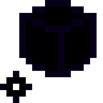

Куб знищення
Увага! Не повністю розроблений предмет.
Інформація може бути змінена, додана або видалена.
Куб анігіляції — це зброя, яка досі перебуває на стадії розробки. Схожа на Бойову гирю, але має більший радіус дії та здатність буквально видаляти будь-які блоки, які можна зруйнувати, простим дотиком, не залишаючи після себе жодних предметів. Щоб повернути його назад, потрібно викинути його або перемкнутися на інший предмет у руці. Він повернеться сам по собі, якщо ти відпустиш праву кнопку миші після того, як він повністю витягнеться, або якщо торкнеться води. Наразі невідомо, як його можна отримати без використання команд або творчого режиму.
- Тип: інструмент, зброя
- Міцність: -
- Складається: ні
- Відновлюваний: ні
- ID: twilightforest:cube_of_annihilation
